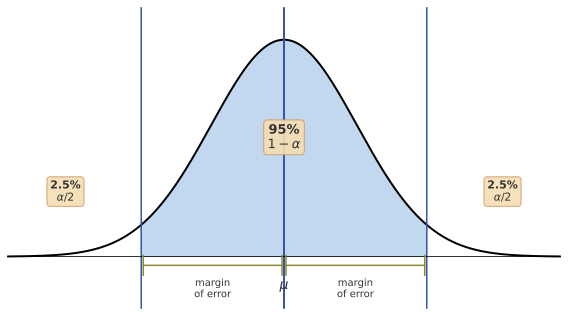
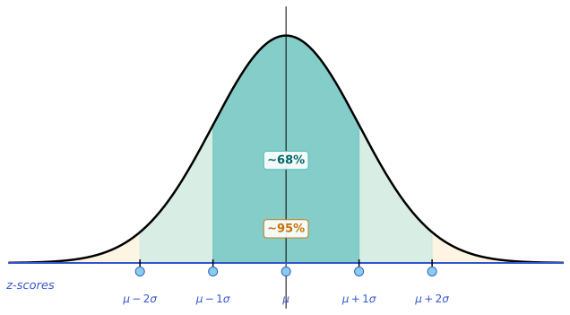
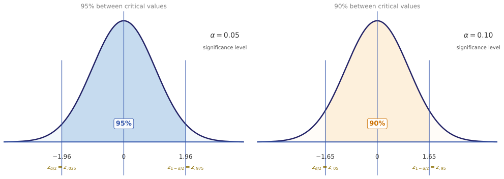
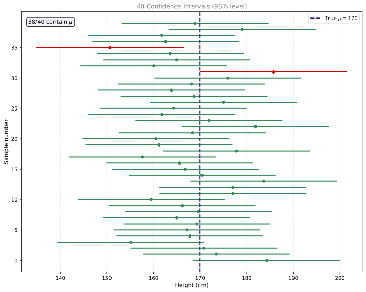
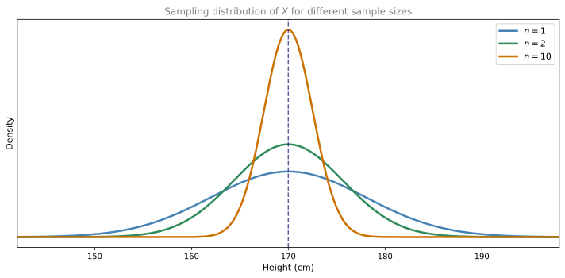
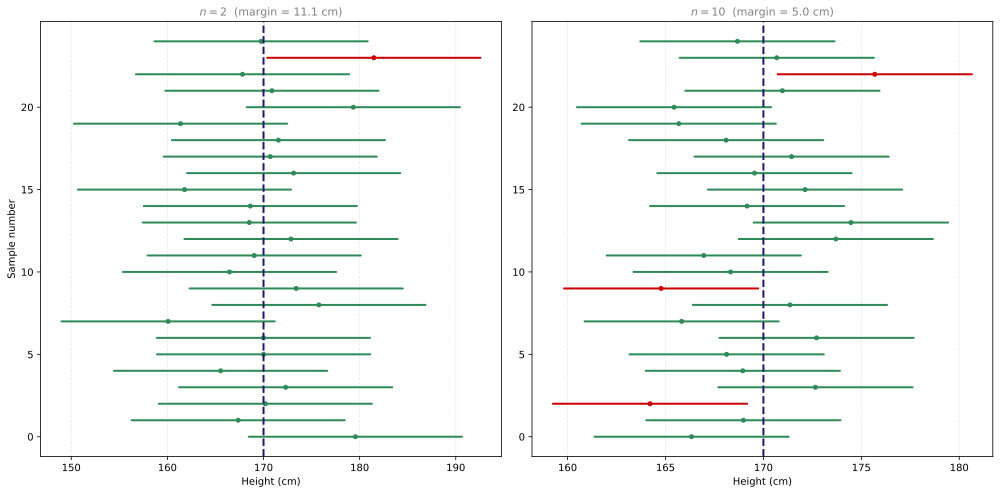
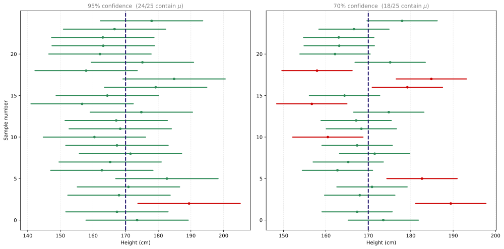
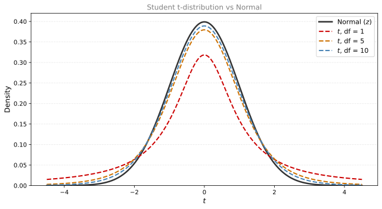

Confidence Intervals
statistics
You have seen how to take samples from a population and compute a sample mean to estimate an unknown population mean . You know that good sampling…
You have seen how to take samples from a population and compute a sample mean \(\bar{x}\) to estimate an unknown population mean \(\mu\). You know that good sampling practices (random sampling, larger sample sizes, i.i.d. observations) help, but no single sample will be perfectly accurate. Every time you sample, you get a different \(\bar{x}\).
Since you will never be able to measure the entire population and calculate the true population mean, all you have is a sample mean. You will always have some degree of uncertainty about how accurate it actually is. A natural question then is whether you can use a sample mean with at least some degree of certainty. Statisticians do this using something called a confidence interval.
Intuition: Lost Key Analogy
Before jumping into formulas, consider a physical analogy that captures the core idea.
Imagine you are walking along a road to visit a friend. When you arrive, you realize you dropped your key somewhere along the way. Your friend offers to help, so you both drive back to the road to search. Here is your plan:
- Park the car at your best guess of where you dropped the key.
- Walk a fixed search distance in both directions from the car.
You need to agree on the search distance before you start, because you want to meet back at the car at the same time. The place you park is always going to be a guess. The thing that will have the biggest impact on whether you find the key is your search distance.
Changing Search Distance
How large should the search distance be? That depends on how confident you need to be that you will actually find the key.
- With a moderate search distance, you might be 80% confident you will find the key.
- If you really need to find the key (maybe you left the oven on), you increase the search distance, and now you are 95% confident.
- If you only have a little time, you shrink the search distance, but your confidence drops.
There is a tradeoff: higher confidence requires a larger search distance.
Structure of Interval
Think of the section of road you search as an interval with a lower limit and an upper limit:
- At the center is your best guess of where the key is.
- On each side is a buffer (the search distance) that accounts for the fact that your guess is probably not exactly right.
Key Insight
The key never moves. Its location is unknown but fixed. The interval, on the other hand, is randomly generated because its center depends on your guess (which varies each time you try). You cannot say “50% of keys fall inside this interval,” because there is only one key and it has always been in the same spot. Instead, the correct statement is: “50% of the guesses are within a search distance of the key.” The guess is the source of randomness, not the key.
Review Questions
1. In the lost key analogy, what does the key represent, and what does the center of the interval represent?
TipAnswer
The key represents the true population parameter \(\mu\) (fixed but unknown). The center of the interval represents the sample mean \(\bar{x}\) (a random guess that changes every time you sample).
2. Why is it incorrect to say “there is a 95% probability that \(\mu\) is inside this interval”?
TipAnswer
Because \(\mu\) is a fixed number, not a random variable. It is either inside the interval or it is not. The randomness comes from the interval itself (through the sample mean). The correct interpretation is: 95% of intervals constructed this way will contain \(\mu\).
Confidence Intervals with Normal Distribution
Now apply these ideas to the estimation problem. Suppose heights in a population follow a normal distribution with unknown mean \(\mu\) and known population variance \(\sigma^2\):
\[ X \sim \mathcal{N}(\underbrace{\mu}_{\text{Unknown}},\; \underbrace{\sigma^2}_{\text{Known}}) \]
It might seem odd that you would know the variance but not the mean. In practice you are often uncertain about both. For now, the simplest setup has only the mean unknown. (Later sections will cover the case where \(\sigma^2\) is also unknown.)
Thinking back to the key analogy: the true value of \(\mu\) is the key. It is fixed but unknown. You will randomly generate a confidence interval to estimate where it is.
Sample of Size One
To build intuition, start with a single observation. You measure the height of one random person, and that measurement is your sample mean \(\bar{x}\). Define a random variable \(\bar{X}\) to describe the distribution of possible sample means. Since you have only one observation:
\[ \bar{X} \sim \mathcal{N}(\mu, \sigma^2) \]
This is identical to the population distribution. You do not suddenly know \(\mu\), but you do know that \(\bar{X}\) has the same mean as the population.
The question becomes: how far is a typical sample mean from the true \(\mu\)?
Margin of Error and Confidence Level
To answer that question, you need two related concepts:
| Concept | Symbol | Meaning |
|---|---|---|
| Significance level | \(\alpha\) | Probability that \(\bar{X}\) falls outside the margin of error |
| Confidence level | \(1 - \alpha\) | Probability that \(\bar{X}\) falls inside the margin of error |
| Margin of error | \(E\) | Distance on each side of \(\mu\) that captures \(1 - \alpha\) of the distribution |
The typical workflow:
- Choose \(\alpha\) (commonly 0.05).
- Compute the confidence level: \(1 - \alpha = 0.95\) (95%).
- Find the margin of error \(E\) such that \(P(\mu - E \leq \bar{X} \leq \mu + E) = 1 - \alpha\).
Since the normal distribution is symmetric around \(\mu\), the probability in each tail is \(\frac{\alpha}{2}\). For \(\alpha = 0.05\), that means 2.5% in each tail.
Confidence Interval Formula
The confidence interval is:
\[ \bar{x} - E \;\leq\; \mu \;\leq\; \bar{x} + E \]
or equivalently:
\[ \bar{x} \pm E \]
What this says: if your sample mean is one of the \((1 - \alpha) \times 100\%\) of sample means that are relatively close to \(\mu\), then \(\mu\) is also relatively close to your sample mean. In other words, unless you got very unlucky and drew an unusually large or small sample, \(\mu\) should be within the margin of error of \(\bar{x}\).
For a normal population with known \(\sigma\) and sample size \(n\), the margin of error is:
\[ E = z_{1-\alpha/2} \cdot \frac{\sigma}{\sqrt{n}} \]
where \(z_{1-\alpha/2}\) is the critical value from the standard normal distribution, the z-score that has \(1 - \alpha/2\) of the distribution to its left. For common confidence levels:
| Confidence Level | \(\alpha\) | \(z_{1-\alpha/2}\) |
|---|---|---|
| 90% | 0.10 | 1.645 |
| 95% | 0.05 | 1.960 |
| 99% | 0.01 | 2.576 |
So the full confidence interval formula is:
\[ \bar{x} \pm z_{1-\alpha/2} \cdot \frac{\sigma}{\sqrt{n}} \]
Z-Scores and Critical Values
The critical values come from the standard normal distribution (also called the z-distribution), which has mean 0 and variance 1. You can convert any normal distribution to the standard normal by subtracting the mean and dividing by the standard deviation:
\[ Z = \frac{X - \mu}{\sigma} \]
For the standard normal, z-scores are simply the values on the horizontal axis. For example, \(z = 2\) means “two standard deviations above the mean.” You may recall from the normal distribution section:
- Roughly 68% of the distribution lies within 1 standard deviation of the mean
- Roughly 95% lies within 2 standard deviations of the mean

For exactly 95%, the critical values are \(\pm 1.96\). The notation \(z_{0.025}\) means “the z-score that has 2.5% of the distribution to its left,” which equals \(-1.96\). Similarly, \(z_{0.975}\) has 97.5% to its left, giving \(+1.96\). These two values are chosen because excluding 5% total (\(\alpha = 0.05\)) means excluding 2.5% from each tail.
For \(\alpha = 0.10\), the critical values are \(z_{0.05} = -1.645\) and \(z_{0.95} = +1.645\), capturing 90% of the distribution between them.

You do not calculate these by hand. You look them up in a z-table or use a software library.
NoteFull Derivation: From Bounding \(\bar{X}\) to Bounding \(\mu\)
The derivation starts with what you know about \(\bar{X}\). Since \(\bar{X} \sim \mathcal{N}(\mu, \sigma^2/n)\), you know that 95% of sample means fall within \(1.96\) standard errors of \(\mu\):
\[ P\left(\mu - z_{1-\alpha/2} \cdot \frac{\sigma}{\sqrt{n}} \;\leq\; \bar{X} \;\leq\; \mu + z_{1-\alpha/2} \cdot \frac{\sigma}{\sqrt{n}}\right) = 1 - \alpha \]
This bounds \(\bar{X}\), but you want to bound \(\mu\). Rearrange the inequality:
Step 1: Subtract \(\mu\) from all terms:
\[ -z_{1-\alpha/2} \cdot \frac{\sigma}{\sqrt{n}} \;\leq\; \bar{X} - \mu \;\leq\; z_{1-\alpha/2} \cdot \frac{\sigma}{\sqrt{n}} \]
Step 2: Subtract \(\bar{X}\) from all terms:
\[ -\bar{X} - z_{1-\alpha/2} \cdot \frac{\sigma}{\sqrt{n}} \;\leq\; -\mu \;\leq\; -\bar{X} + z_{1-\alpha/2} \cdot \frac{\sigma}{\sqrt{n}} \]
Step 3: Multiply by \(-1\) (this flips the inequality directions):
\[ \bar{X} - z_{1-\alpha/2} \cdot \frac{\sigma}{\sqrt{n}} \;\leq\; \mu \;\leq\; \bar{X} + z_{1-\alpha/2} \cdot \frac{\sigma}{\sqrt{n}} \]
And that is your confidence interval: \(\bar{x} \pm z_{1-\alpha/2} \cdot \frac{\sigma}{\sqrt{n}}\).
Connection to the Central Limit Theorem
So far we assumed the population follows a normal distribution, which guarantees \(\bar{X}\) is also normal. But what if the population is not normally distributed?
This is where the Central Limit Theorem saves the day. If \(n\) is large enough, then \(\bar{X}\) will still be approximately normal with mean \(\mu\) and variance \(\sigma^2/n\), regardless of the population shape. So the confidence interval formula still works, as long as you pick a large enough sample size (the rule of thumb is \(n \geq 30\)).
Review Questions
3. What is the relationship between significance level \(\alpha\) and confidence level?
TipAnswer
They are complements: confidence level \(= 1 - \alpha\). If \(\alpha = 0.05\), the confidence level is 95%. The significance level is the probability of the sample mean falling outside the margin of error (in the tails).
4. Why does the margin of error formula divide by \(\sqrt{n}\)?
TipAnswer
From the Central Limit Theorem, the standard deviation of the sample mean is \(\frac{\sigma}{\sqrt{n}}\). Larger samples produce less variable sample means, so the margin of error shrinks. This term \(\frac{\sigma}{\sqrt{n}}\) is called the standard error.
5. A population has \(\sigma = 10\). You take a sample of size \(n = 25\) and get \(\bar{x} = 72\). Construct a 95% confidence interval for \(\mu\).
TipAnswer
\(E = z_{0.975} \cdot \frac{\sigma}{\sqrt{n}} = 1.96 \cdot \frac{10}{\sqrt{25}} = 1.96 \cdot 2 = 3.92\)
The 95% confidence interval is \(72 \pm 3.92\), or \((68.08,\; 75.92)\).
6. When constructing a confidence interval at a 90% confidence level, which critical value should you use to calculate the margin of error?
- \(z_{0.90}\)
- \(z_{0.95}\)
- \(z_{0.025}\)
TipAnswer
b. \(z_{0.95}\). At 90% confidence, \(\alpha = 0.10\), so \(\alpha/2 = 0.05\). The right critical value is \(z_{1 - \alpha/2} = z_{0.95} = 1.645\). The notation \(z_{0.95}\) means “the z-score with 95% of the distribution to its left.” This is the value you multiply by the standard error to get the margin of error. Option a (\(z_{0.90}\)) is incorrect because it would leave 10% in the right tail alone, not split evenly. Option c (\(z_{0.025}\)) corresponds to a 95% confidence interval, not 90%.
20. Suppose you have a sample of 100 heights of individuals from a specific population. Assume the population standard deviation is 1 cm, and the sample mean is 175 cm from a random sample of 100 individuals. What expression describes the margin of error for a confidence level of 99%?
- \(z_{0.01} \cdot \frac{1}{10}\)
- \(z_{0.005} \cdot \frac{1}{100}\)
- \(z_{0.005} \cdot \frac{1}{10}\)
- \(z_{0.1} \cdot \frac{1}{100}\)
TipAnswer
c. For 99% confidence, \(\alpha = 0.01\), so \(\alpha/2 = 0.005\). The critical value is \(z_{0.005}\) (the z-score with 0.5% in the left tail, i.e., \(z_{1-0.005} = z_{0.995}\) in the other notation). The standard error is \(\sigma/\sqrt{n} = 1/\sqrt{100} = 1/10\). So the margin of error is \(z_{0.005} \cdot \frac{1}{10}\).
25. Which of the following statements about confidence intervals is true? (Hint: margin of error = \(z_{\alpha/2} \cdot \sigma / \sqrt{n}\))
- Assuming a fixed confidence level, halving the margin of error requires a sample twice as large.
- Assuming a fixed confidence level, larger samples result in a smaller margin of error.
- Assuming a fixed margin of error, larger samples result in a larger confidence level.
- Assuming a fixed sample size, higher confidence results in a smaller margin of error.
TipAnswer
b. The margin of error is \(z_{\alpha/2} \cdot \sigma / \sqrt{n}\). When \(n\) increases, \(\sqrt{n}\) increases, so the fraction \(\sigma/\sqrt{n}\) decreases, making the margin of error smaller. Option a is wrong because halving the margin of error requires quadrupling \(n\) (since \(\sqrt{4n} = 2\sqrt{n}\)). Option c is wrong because for a fixed margin of error, larger \(n\) reduces the standard error, so you would need a smaller \(z_{\alpha/2}\) to maintain the same margin, which corresponds to a lower confidence level. Option d is wrong because higher confidence means a larger \(z_{\alpha/2}\), which makes the margin of error larger.
Visualizing Multiple Confidence Intervals
To solidify the interpretation, imagine generating many confidence intervals. Each time you take a new sample, compute \(\bar{x}\), and draw the interval \(\bar{x} \pm E\) around it. Some intervals will contain \(\mu\) and some will not.

Green intervals contain the true \(\mu\). Red intervals do not. Over many repetitions, approximately 95% of intervals will be green. This is what “95% confidence” means: the procedure captures \(\mu\) 95% of the time, not that any single interval has a 95% probability of containing \(\mu\).
Interpreting Confidence Intervals
This distinction is subtle but important. Consider the population parameter \(\mu\). A defining characteristic of \(\mu\) is that it is fixed but unknown. It is the value you are trying to estimate. Crucially, \(\mu\) does not have a probability distribution because it is not random. It is always the same value for a given population. Because \(\mu\) is fixed, for any given interval it is either inside the interval or it is not. It does not change.
The sample mean \(\bar{X}\), on the other hand, does have a probability distribution (the sampling distribution). Its value changes depending on which sample you happen to draw. The confidence interval is tied to the sample mean. It changes depending on the value of \(\bar{X}\).
So what does “95% confidence” mean? It means: if you repeat the sampling experiment many times and calculate the interval for each sample estimate, 95% of those intervals will contain \(\mu\). The confidence level describes the success rate of the procedure, not the probability that a specific interval contains \(\mu\).
| Statement | Correct? |
|---|---|
| “The confidence interval contains the true population parameter 95% of the time” | Yes |
| “There is a 95% probability that \(\mu\) falls within this confidence interval” | No |
| “The procedure captures \(\mu\) 95% of the time” | Yes |
| “95% of the population falls in this interval” | No |
Why is the second statement wrong? Because once you compute a specific interval, \(\mu\) is either inside it or it is not. You cannot assign a probability to a fixed number being in a fixed interval. The randomness was in the sampling, not in \(\mu\).
Review Questions
7. You construct 200 confidence intervals at the 95% level. Approximately how many do you expect to miss \(\mu\)?
TipAnswer
\(200 \times 0.05 = 10\) intervals. At the 95% confidence level, 5% of intervals will not contain \(\mu\), so about 10 out of 200 will miss.
8. A colleague says: “I computed a 95% confidence interval of (4.2, 5.8), so there is a 95% chance that \(\mu\) is between 4.2 and 5.8.” What is wrong with this statement?
TipAnswer
\(\mu\) is a fixed (not random) quantity. It is either in the interval or it is not. The 95% refers to the long-run success rate of the method: if you repeated the sampling and interval construction many times, 95% of those intervals would contain \(\mu\). You cannot assign a probability to a specific, already-computed interval containing a fixed parameter.
Effect of Sample Size
You have seen that for a sample of size \(n = 1\), the sampling distribution \(\bar{X}\) is identical to the population distribution. The standard deviation of \(\bar{X}\) (called the standard error) is:
\[ \sigma_{\bar{X}} = \frac{\sigma}{\sqrt{n}} \]
When \(n = 1\), this equals \(\sigma\). But what happens if you increase the sample size?
Larger Samples, Narrower Distribution
The mean of \(\bar{X}\) does not depend on sample size. It is always \(\mu\). The standard deviation, however, shrinks as \(n\) grows:
| \(n\) | \(\sigma_{\bar{X}} = \sigma / \sqrt{n}\) | Effect on distribution |
|---|---|---|
| 1 | \(\sigma\) | Same as population |
| 2 | \(\sigma / \sqrt{2} \approx 0.71\sigma\) | Narrower |
| 10 | \(\sigma / \sqrt{10} \approx 0.32\sigma\) | Much narrower |
| 100 | \(\sigma / 10 = 0.1\sigma\) | Very tight around \(\mu\) |
The distribution gets taller and skinnier. It does not move left or right (the mean stays at \(\mu\)), but the spread decreases.

Smaller Margins of Error
Since the distribution of \(\bar{X}\) is narrower when \(n\) is larger, you do not need as large a margin of error to capture 95% of the distribution. The margin of error shrinks:
\[ E = z_{1-\alpha/2} \cdot \frac{\sigma}{\sqrt{n}} \]
As \(n\) increases, \(\frac{\sigma}{\sqrt{n}}\) decreases, so \(E\) decreases. The confidence interval gets tighter while maintaining the same confidence level.
Comparing Intervals for Different Sample Sizes

Both panels have a 95% confidence level, but the intervals on the right (\(n = 10\)) are much narrower. They are also more desirable because you get a more precise estimate of \(\mu\) while maintaining the same confidence that you are correct.
More generally: as sample size increases, the confidence interval shrinks. You can make more precise estimates of \(\mu\) without dropping your confidence level. The most straightforward way to get a tighter confidence interval is to collect more data.
Review Questions
9. Why does increasing sample size narrow the confidence interval?
TipAnswer
The standard error \(\frac{\sigma}{\sqrt{n}}\) decreases as \(n\) grows. Since the margin of error is \(z_{1-\alpha/2} \cdot \frac{\sigma}{\sqrt{n}}\), it also shrinks. The sampling distribution of \(\bar{X}\) concentrates more tightly around \(\mu\), so you need less padding on each side to capture 95% of possible sample means.
10. You have \(\sigma = 8\) and want a 95% confidence interval. How does the margin of error change from \(n = 1\) to \(n = 100\)?
TipAnswer
For \(n = 1\): \(E = 1.96 \times \frac{8}{1} = 15.68\) cm. For \(n = 100\): \(E = 1.96 \times \frac{8}{10} = 1.57\) cm. The margin of error shrinks by a factor of 10 (since \(\sqrt{100} = 10\)). With 100 observations, your confidence interval is only about 3.14 cm wide compared to 31.36 cm with a single observation.
19. Consider two sets of samples drawn from the same population that are randomly selected. Set X has a sample size = 10, and set Y has a sample size = 100. Which of the following statements is accurate about the confidence interval for the mean of the samples?
- The confidence interval for set X is larger than the confidence interval for set Y.
- The confidence interval for set X is smaller than the confidence interval for set Y.
- The confidence interval for set X equals the confidence interval for set Y.
- There is not enough information to answer the question.
TipAnswer
a. The margin of error is proportional to \(1/\sqrt{n}\). Since set X has a smaller sample size (\(n=10\)), its standard error \(\sigma/\sqrt{10}\) is larger than set Y’s standard error \(\sigma/\sqrt{100}\), producing a wider confidence interval.
Effect of Confidence Level
Now consider what happens when you keep the sample size fixed but change the confidence level.
The distribution of \(\bar{X}\) does not change. It is still the same normal curve regardless of what confidence level you choose. What changes is how much of that distribution you decide to capture.
- At 95% confidence, you need margins of error large enough to contain 95% of sample means.
- At 70% confidence, you only need to contain 70% of sample means. The margins shrink, but more intervals will miss \(\mu\).

The sample means are the same in both panels (same random draws). The only difference is the search distance (margin of error). With a 70% confidence level, you get narrower intervals, but many more of them miss \(\mu\) (red). The distribution of sample means has not changed. You have simply chosen to use smaller margins of error, so there are more instances where the confidence interval does not contain \(\mu\).
This is the same tradeoff you saw with the lost key: if you want a higher probability that your interval contains \(\mu\), you need larger margins of error.
Review Questions
11. If you lower the confidence level from 95% to 80%, what happens to the width of the confidence interval?
TipAnswer
The interval gets narrower. A lower confidence level means you accept a higher probability of missing \(\mu\), so you can use a smaller critical value \(z_{1-\alpha/2}\) and thus a smaller margin of error. The tradeoff is that more of your intervals will fail to contain \(\mu\).
12. Why do confidence intervals rarely use levels below 90%?
TipAnswer
At low confidence levels, too many intervals miss \(\mu\), making the estimate unreliable. For example, at 70% confidence, nearly one in three intervals does not contain the true parameter. In practice, 95% is the most common choice because it balances precision and reliability. If you want a narrower interval, the better approach is to collect more data rather than lowering the confidence level.
Two Ways to Shrink a Confidence Interval
To summarize what you have seen:
- Increase sample size (\(n\)). This makes the sampling distribution narrower, reducing the margin of error while keeping the same confidence level. This is the preferred approach.
- Lower the confidence level (\(1 - \alpha\)). This uses a smaller critical value, reducing the margin of error. But the tradeoff is that more intervals will miss \(\mu\).
Ideally, you want both a high confidence level and a narrow interval. You cannot get both for free. The most straightforward solution is to collect more data.
Unknown Standard Deviation: t-Distribution
So far, all the formulas assumed you know the population standard deviation \(\sigma\). In practice, this is rarely the case. Most of the time you do not know \(\sigma\) and must estimate it from your sample.
Problem
When \(\sigma\) is unknown, you replace it with the sample standard deviation \(s\). But this creates an issue: the quantity
\[ \frac{\bar{X} - \mu}{s / \sqrt{n}} \]
no longer follows a normal distribution. It follows a different distribution called the Student’s t-distribution.
t-Distribution vs Normal Distribution
The t-distribution looks similar to the normal distribution (bell-shaped, symmetric around zero), but it has fatter tails. This means that if you sample a point from the t-distribution, it is more likely to be far from the center compared to the normal distribution. The extra spread accounts for the additional uncertainty introduced by estimating \(\sigma\) with \(s\).

Degrees of Freedom
The t-distribution is defined by a parameter called the degrees of freedom (df), which equals \(n - 1\) (sample size minus one). The degrees of freedom control how heavy the tails are:
- Low df (small \(n\)): fatter tails, more spread, further from normal
- High df (large \(n\)): thinner tails, closer to normal
This makes sense: the more samples you use, the closer your sample standard deviation \(s\) gets to the true \(\sigma\). And if you know \(\sigma\), you use the normal distribution. So as \(n\) grows, the t-distribution converges to the normal.
Confidence Interval with Unknown \(\sigma\)
The formula changes in two ways:
- Replace \(\sigma\) with \(s\) (sample standard deviation)
- Replace the z critical value with a t critical value
| Known \(\sigma\) | Unknown \(\sigma\) | |
|---|---|---|
| Standard error | \(\frac{\sigma}{\sqrt{n}}\) | \(\frac{s}{\sqrt{n}}\) |
| Critical value | \(z_{1-\alpha/2}\) | \(t_{1-\alpha/2,\; n-1}\) |
| Margin of error | \(z_{1-\alpha/2} \cdot \frac{\sigma}{\sqrt{n}}\) | \(t_{1-\alpha/2,\; n-1} \cdot \frac{s}{\sqrt{n}}\) |
The confidence interval becomes:
\[ \bar{x} \pm t_{1-\alpha/2,\; n-1} \cdot \frac{s}{\sqrt{n}} \]
where \(t_{1-\alpha/2,\; n-1}\) is the critical value from the t-distribution with \(n-1\) degrees of freedom. You look this up in a t-table or use software.
Review Questions
15. Why do we use the t-distribution instead of the normal distribution when \(\sigma\) is unknown?
TipAnswer
When you replace \(\sigma\) with the sample standard deviation \(s\), the resulting quantity \(\frac{\bar{X} - \mu}{s/\sqrt{n}}\) no longer follows a normal distribution. It follows a t-distribution, which has heavier tails to account for the extra uncertainty of estimating \(\sigma\). Using the z critical value from the normal distribution would underestimate the margin of error.
16. As sample size increases, what happens to the t-distribution?
TipAnswer
As \(n\) increases, the degrees of freedom (\(n - 1\)) increase, and the t-distribution gets closer and closer to the normal distribution. This is because with more data, \(s\) becomes a better estimate of \(\sigma\), reducing the extra uncertainty that makes the tails heavier.
22. You have a sample size of 20 from a population with unknown mean and standard deviation. You measured that the sample mean \(\bar{X} = 50\) and the sample standard deviation is \(s = 10\). A confidence interval of 95% confidence level is given by: (Hint: \(t_{0.975} = 2.093\))
- (48.95, 51.05)
- (45.32, 54.68)
- (45.2, 54.8)
- (48.9, 51.1)
TipAnswer
b. \(E = t_{0.975,\;19} \cdot \frac{s}{\sqrt{n}} = 2.093 \times \frac{10}{\sqrt{20}} = 2.093 \times 2.236 = 4.68\). CI: \(50 \pm 4.68 = (45.32,\; 54.68)\).
26. You have a sample size of 20 from a population with unknown mean and standard deviation. You measured that the sample mean \(\bar{X} = 50\) and the sample standard deviation is \(s = 10\). What expression describes the margin of error for a confidence level of 95%?
- \(z_{0.025} \cdot \frac{50}{\sqrt{20}}\)
- \(t_{0.025} \cdot \frac{10}{\sqrt{20}}\)
- \(z_{0.05} \cdot \frac{10}{\sqrt{20}}\)
- \(t_{0.05} \cdot \frac{50}{\sqrt{20}}\)
TipAnswer
b. Since \(\sigma\) is unknown and we use the sample standard deviation \(s\), we must use the t-distribution (not z). For a 95% CI, \(\alpha = 0.05\), so \(\alpha/2 = 0.025\). The critical value is \(t_{0.025}\) with \(n - 1 = 19\) degrees of freedom. The standard error uses \(s\) (not \(\bar{X}\)), so the margin of error is \(t_{0.025} \cdot s/\sqrt{n} = t_{0.025} \cdot 10/\sqrt{20}\).
Calculating Required Sample Size
In the worked example, the margin of error was 7 cm. Suppose you are not happy with that. You want a margin of error of only 3 cm for a more precise estimate. The question becomes: what is the smallest sample size that gives you the desired margin of error?
Start with the margin of error formula and solve for \(n\):
\[ E = z_{1-\alpha/2} \cdot \frac{\sigma}{\sqrt{n}} \]
You want \(E \leq 3\). Since a smaller margin of error is even better, you need:
\[ 3 \geq z_{1-\alpha/2} \cdot \frac{\sigma}{\sqrt{n}} \]
Solving for \(n\):
\[ \sqrt{n} \geq \frac{z_{1-\alpha/2} \cdot \sigma}{E} \]
\[ n \geq \left(\frac{z_{1-\alpha/2} \cdot \sigma}{E}\right)^2 \]
Example
Using the Statistopia data (\(\sigma = 25\), 95% confidence so \(z_{0.975} = 1.96\), desired \(E = 3\)):
\[ n \geq \left(\frac{1.96 \times 25}{3}\right)^2 = \left(\frac{49}{3}\right)^2 = (16.33)^2 = 266.78 \]
Since you cannot sample a fraction of a person, round up to \(n = 267\). You need at least 267 adults to achieve a margin of error of 3 cm at 95% confidence.
General Formula
For any desired margin of error (MOE):
\[ n \geq \left(\frac{z_{1-\alpha/2} \cdot \sigma}{\text{MOE}}\right)^2 \]
Always round up to the next whole number.
Review Questions
14. You want a 95% confidence interval with a margin of error no larger than 2 cm. The population standard deviation is \(\sigma = 10\) cm. What is the minimum sample size?
TipAnswer
\(n \geq \left(\frac{1.96 \times 10}{2}\right)^2 = \left(\frac{19.6}{2}\right)^2 = (9.8)^2 = 96.04\). Round up to \(n = 97\).
Calculation Steps
- Compute the sample mean \(\bar{x}\) from your data.
- Define a desired confidence level \(1 - \alpha\) (for example, 95%).
- Find the critical value \(z_{1-\alpha/2}\) for your confidence level (from a z-table or software).
- Compute the standard error: \(\text{SE} = \frac{\sigma}{\sqrt{n}}\).
- Compute the margin of error: \(E = z_{1-\alpha/2} \cdot \text{SE}\).
- Add and subtract the margin of error to the sample mean: \(\bar{x} \pm E\).
WarningAssumptions
For this confidence interval formula to be valid:
- The sample must be random (no selection bias).
- The sample size must be \(n \geq 30\), or the population must be approximately normal.
When \(n \geq 30\), the Central Limit Theorem guarantees the sampling distribution of \(\bar{X}\) is approximately normal regardless of the population shape.
Review Questions
21. To calculate a confidence interval for the mean of a population, what assumptions must be made? Select all that apply.
- The sample is a random sample.
- The population must follow a normal distribution.
- The sample size must be big enough (usually over 30).
- The sample must have a mean = 0 and a standard deviation = 1.
TipAnswer
a and c. The sample must be random (always required). The sample size must be at least 30 for the CLT to guarantee approximate normality of \(\bar{X}\). If the population is already normal (option b), then smaller samples also work, but this is an alternative condition, not always required. Option d is false; the sample can have any mean and standard deviation.
Worked Example
Return to the island of Statistopia, which has 6,000 adults. You want to find the average height of the population, but you cannot measure all 6,000 people. Instead, you pick 49 adults at random and find:
- Sample mean: \(\bar{x} = 170\) cm
- Population standard deviation: \(\sigma = 25\) cm
- Sample size: \(n = 49\)
Construct a 95% confidence interval for the average height of adults on Statistopia.
Step 1: The critical value for 95% confidence is \(z_{0.975} = 1.96\).
Step 2: Compute the margin of error:
\[ E = z_{1-\alpha/2} \cdot \frac{\sigma}{\sqrt{n}} = 1.96 \times \frac{25}{\sqrt{49}} = 1.96 \times \frac{25}{7} = 1.96 \times 3.57 = 7 \]
Step 3: Construct the interval:
\[ \bar{x} \pm E = 170 \pm 7 \]
Result: The 95% confidence interval is (163 cm, 177 cm). You are 95% confident that the average height of adults on Statistopia falls within this interval.
Review Questions
13. Which statement is an accurate interpretation of the confidence interval \(163\text{ cm} < \mu < 177\text{ cm}\) at a 95% confidence level when estimating the average height in Statistopia?
- There is a 95% chance that the average height in Statistopia falls within the range of 163 cm to 177 cm.
- We are 95% confident that the true average height in Statistopia is between 163 cm and 177 cm.
- The average height in Statistopia is definitively between 163 cm and 177 cm.
TipAnswer
b. “95% confident” means the procedure used to generate this interval captures the true \(\mu\) 95% of the time. Option a is wrong because \(\mu\) is fixed, not random, so you cannot assign a probability to it being in a specific interval. Option c is wrong because confidence intervals do not guarantee containment; there is always a 5% chance this particular interval missed \(\mu\).
Confidence Intervals for Proportions
So far, the confidence intervals have been for the population mean. But you can also construct confidence intervals for proportions. For example, instead of asking “what is the average height?” you might ask “what proportion of people own a car?”
Setup
Suppose you want to find the proportion of adults who own a car in Statistopia. You sample \(n = 30\) people and find that 24 of them own a car. The sample proportion is:
\[ \hat{p} = \frac{x}{n} = \frac{24}{30} = 0.80 \]
This is your best estimate of the population proportion \(p\), but it may not be exact. You want a 95% confidence interval.
Formula
The confidence interval for a proportion is:
\[ \hat{p} \pm z_{1-\alpha/2} \cdot \sqrt{\frac{\hat{p}(1 - \hat{p})}{n}} \]
The key difference from the mean case is in the standard error. For means, the standard error is \(\frac{\sigma}{\sqrt{n}}\). For proportions, the standard error is:
\[ \text{SE} = \sqrt{\frac{\hat{p}(1 - \hat{p})}{n}} \]
This comes from the variance of a Bernoulli distribution: if each observation is a success/failure with probability \(p\), the variance of the sample proportion is \(\frac{p(1-p)}{n}\). Since \(p\) is unknown, you use \(\hat{p}\) as the estimate.
Worked Example
Using the Statistopia car ownership data (\(n = 30\), \(\hat{p} = 0.80\), 95% confidence):
Step 1: Critical value: \(z_{0.975} = 1.96\)
Step 2: Standard error:
\[ \text{SE} = \sqrt{\frac{0.80 \times 0.20}{30}} = \sqrt{\frac{0.16}{30}} = \sqrt{0.00533} = 0.073 \]
Step 3: Margin of error:
\[ E = 1.96 \times 0.073 = 0.14 \]
Step 4: Confidence interval:
\[ 0.80 \pm 0.14 = (0.66,\; 0.94) \]
You are 95% confident that the population proportion of adults who own a car in Statistopia is between 66% and 94%.
Comparison: Means vs Proportions
| Means | Proportions | |
|---|---|---|
| Point estimate | \(\bar{x}\) | \(\hat{p}\) |
| Standard error | \(\frac{\sigma}{\sqrt{n}}\) | \(\sqrt{\frac{\hat{p}(1-\hat{p})}{n}}\) |
| Confidence interval | \(\bar{x} \pm z_{1-\alpha/2} \cdot \frac{\sigma}{\sqrt{n}}\) | \(\hat{p} \pm z_{1-\alpha/2} \cdot \sqrt{\frac{\hat{p}(1-\hat{p})}{n}}\) |
Review Questions
17. What is the standard error for a proportion, and why is it different from the standard error for a mean?
TipAnswer
The standard error for a proportion is \(\sqrt{\frac{\hat{p}(1-\hat{p})}{n}}\). It is different because proportions come from Bernoulli trials (success/failure), where the variance is \(p(1-p)\), not \(\sigma^2\). Since the true \(p\) is unknown, you substitute \(\hat{p}\).
18. You survey 200 customers and find that 140 are satisfied (\(\hat{p} = 0.70\)). Construct a 95% confidence interval for the true satisfaction proportion.
TipAnswer
\(\text{SE} = \sqrt{\frac{0.70 \times 0.30}{200}} = \sqrt{0.00105} = 0.0324\)
\(E = 1.96 \times 0.0324 = 0.0635\)
CI: \(0.70 \pm 0.0635 = (0.637,\; 0.764)\)
You are 95% confident the true satisfaction rate is between 63.7% and 76.4%.
23. A manufacturing company takes a sample of 100 items in its product warehouse and determines that 22% of the sample contains a defect. Calculate the proportion margin of error with a 95% confidence interval. (Hint: \(z_{\alpha/2} = 1.96\))
- 0.0336
- 0.0812
- 0.0919
- 0.3363
TipAnswer
b. \(E = 1.96 \times \sqrt{\frac{0.22 \times 0.78}{100}} = 1.96 \times \sqrt{0.001716} = 1.96 \times 0.04142 = 0.0812\).
24. Researchers conducted a study and tested a random sample of 200 animals. Their research shows that 40 of the animals test positive for a disease. Calculate the margin of error for a 90% confidence level for the percentage of animals that carry the disease. (Hint: \(z_{\alpha/2} = 1.645\))
- 0.003
- 0.0141
- 0.0465
- 0.233
TipAnswer
c. The sample proportion is \(\hat{p} = 40/200 = 0.2\). The margin of error for a proportion is \(E = z_{\alpha/2} \cdot \sqrt{\hat{p}(1-\hat{p})/n} = 1.645 \times \sqrt{0.2 \times 0.8 / 200} = 1.645 \times \sqrt{0.0008} = 1.645 \times 0.02828 = 0.0465\).
Summary
| Concept | Description |
|---|---|
| Confidence interval | \(\bar{x} \pm z_{1-\alpha/2} \cdot \frac{\sigma}{\sqrt{n}}\) |
| Confidence level | \(1 - \alpha\), the long-run proportion of intervals that contain \(\mu\) |
| Significance level | \(\alpha\), the probability of the sample mean falling in the tails |
| Margin of error | \(E = z_{1-\alpha/2} \cdot \frac{\sigma}{\sqrt{n}}\) (for known \(\sigma\)) |
| Effect of \(n\) | Larger \(n\) shrinks the margin of error (more data = more precision) |
| Effect of confidence level | Higher confidence requires wider intervals; lower confidence gives narrower intervals but more misses |
| Key interpretation | The parameter is fixed; the interval is random. “95% confidence” describes the procedure, not a single interval |
Interactive Tool: Confidence Intervals
Use this tool to generate confidence intervals for Bernoulli and Normal distributions. Set the distribution parameters, sample size, and confidence level, then generate intervals to see how many contain the true population mean. Blue intervals contain the population mean, pink intervals do not.